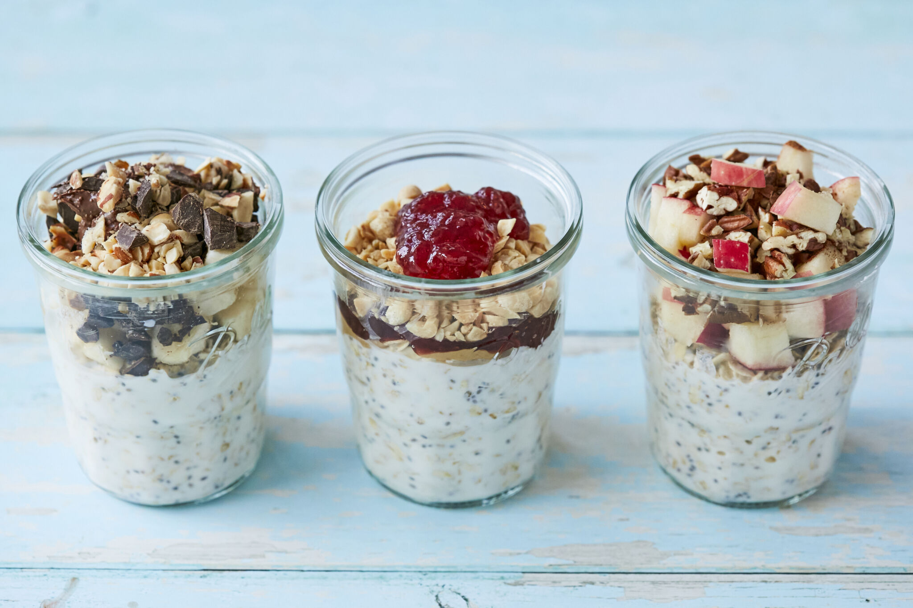

What are Overnight Oats?
Overnight oats (also called ONO) is an alternative way of preparing oatmeal that doesn't involve any cooking.
Rather than the traditional method of boiling oats, overnight oats are mixed with milk, or a dairy-free alternative,
and left overnight in the fridge, allowing the oats to hydrate.
While you're sleeping, the overnight oats absorb the liquid and other ingredients, soften up,
and form a delicious texture that makes for a great breakfast food.
Ingredients
- Old-fashioned rolled oats: Old-fashioned rolled oats are a must for overnight oats. They soak up the liquid overnight, which gives you a lovely creamy texture. Instant, quick-cooking and steel cut oats don't work because they don't absorb the liquid in the same way that rolled oats do. Try my overnight steel cut oats recipe if you prefer!
- Milk: You can make overnight oats with any type of milk you prefer. I personally like non-diary options and usually use unsweetened almond milk for my overnight oats.
- Yogurt: Yogurt gives overnight oats an extra creamy texture while adding a bit of protein. I personally like using plain Greek yogurt since it's the highest in protein and lowest in sugar. To make vegan or dairy-free overnight oats you can use a non-dairy yogurt (I like Siggi's plant-based or Culina) or skip the yogurt all together and use additional milk.
- Chia seeds: Chia seeds are optional, but I love them because they add a bit of fiber, protein and omega-3 fatty acids and they help absorb some of the liquid which gives the oats a thicker consistency.
- Add-ins + toppings: Here's where you can get creative. Just like with regular oatmeal, there are some classic add-ins like vanilla extract, ground cinnamon, maple syrup (or honey) and a pinch of sea salt that really elevate the flavor and make overnight oats super tasty.
Overnight Oats Ratio
The base “recipe” for overnight oats is so simple! The hardest part is getting the right ratio of oats to liquid, but if you follow my recipes you'll be set!
I aim for a 1:1 ratio of rolled oats to milk, plus half as much yogurt. So for 1 cup of oats, I use 1 cup of milk + 1/2 cup of yogurt (or an additional 1/2 cup of milk). For this recipe, I'm skipping the yogurt and using the extra milk. This seems to give the oats the perfect consistency, not too thick, but not soupy. For the liquid, I usually go for non-dairy milk like almond milk, but you can use whatever milk you have on hand and if you really want to experiment you can try using different liquids like fruit juice.
- Add everything together.
- ????
- That's it! You're done!
Return to top
Return to main page